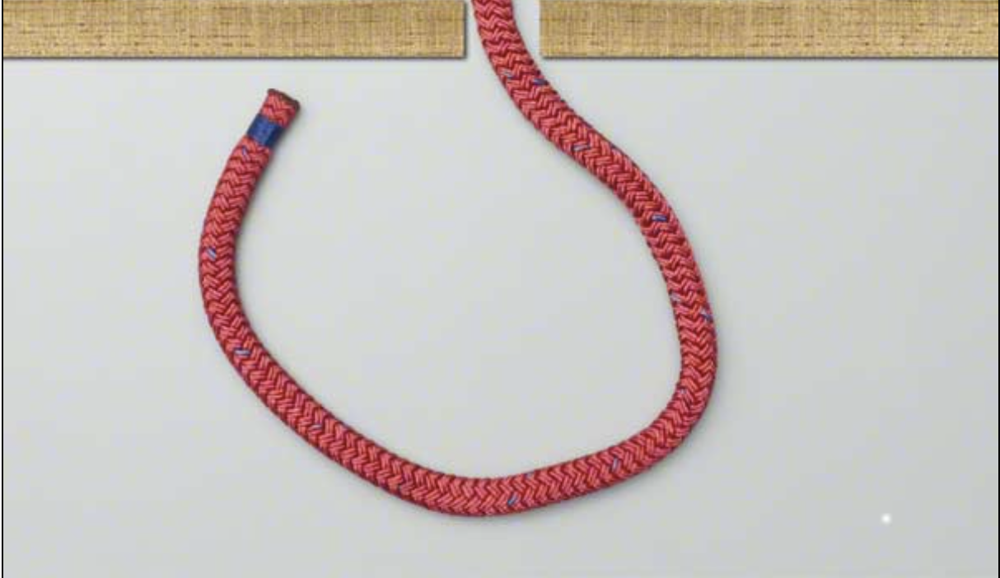
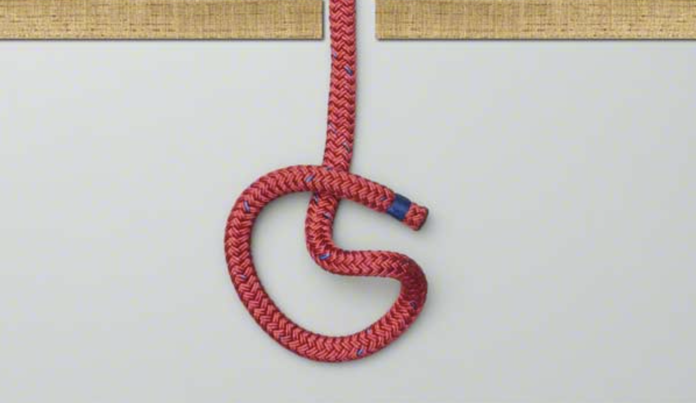
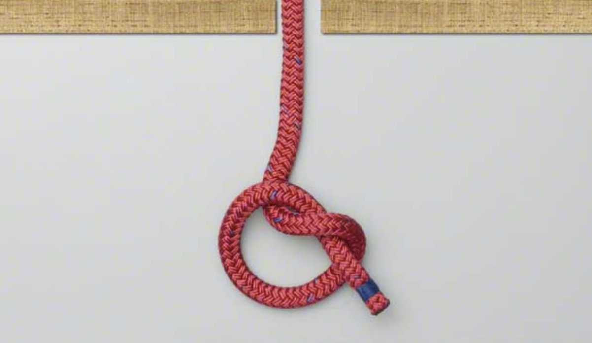

<!DOCTYPE html>
<html lang="en">
<head>

  <meta charset="UTF-8">
  <meta name="description" content="How to tie an Overhand Knot">
  <meta name="author" content="Mary Ross">
  <meta name="viewport" content="width=device-width, initial scale=1.0">
  <title> How to Tie an <ins>Overhand Knot</ins> </title>
  <style>
  body {background-color: beige}
  h1 {color: turquoise}
  h3 {color: teal}
  h2 {color: aqua}

  </style>
</head>
<!-- Summary -->
<div/ id="body-summary/materials">
<body>
  <h1 align= "center" id= "top">How to Tie an Overhand Knot</h1>

         <hr/>
         <h3 align= "center"><u>Summary</u></h3>
           <p align= "center">
             This is a <cite>fundamental</cite> knot, which forms the basis of many other knots.
             Like these perhaps:
             <br />
             

           </p>
           <!-- what you'll need -->
<h2>For now, we'll stick to the basics</h2>
         <h3><u>What You Will Need</u></h3>
           <p>
             <ul>
               <li>A <strong>Rope</strong></l>
               <li>A Pair of Hands</l>
                 <div />


             </ul>

           </p>

<!-- quote -->

           <div/ id="quote">

           <blockquote>
             <i> Franklin D. Roosevelt</i> said, "When you reach the end of your rope, tie and knot and hang on." Does that have anything to do with these instructions? Not really, but quotes about knots are few and far between.
           </blockqoute>

<!--table-->

           <div/ id="table/ instructions/ photos">
           <style>
            body {background-color: beige;}
            table, td, th {
              border: 2px teal;
              border-collapse: collapse;
              padding: 5px;

            }
          </style>
           <hr/>
           <h2 align="center"><strong>Overhand Knot</strong></h2>
           <hr />
           <table width="100%">
             <tbody>
               <tr>
                 <th scope="col">Steps</th>
                 <th scope="col">Description</th>
                 <th scope="col">Photos</th>
               </tr>
               <tr>
                 <th scope="row">First</th>
                 <td>Lay rope flat </td>
                 <td>
                   <p align="center">
                     
                   </p>
                 </td>
               </tr>
             <tr>
                 <th scope="row">Second</th>
                 <td> Form a
                    <a href="#dfn-loop">loop</a>

                 <td>
                   <p align="center">
                     
                   </p>
                 </td>
                 </th>
               </tr>
               <tr>
                   <th scope="row">Third</th>
                   <td> Pass one end of the rope through the loop
                   </td>
                   <td>
                     <p align="center">
                       

                     </p>
                   </td>
                   </th>
               </tr>
               <tr>
                 <th scope="row">Last</th>
                 <td> Pull each end of the rope in opossite directions to tighten and complete knot</td>
                 <td>
                   <p align="center">
                     
           </table>
           <dd><dfn id="dfn-loop">Loops</dfn> are formed by placing on end of the rope on top of the other, forming a cirlce.</dd>

           <p align= "center">
<!-- navigation -->
             <br />
             <a href="./about.html">About</a>
             <br />
             <a href="./contact.html">Learn More</a>


</body>

</html>
